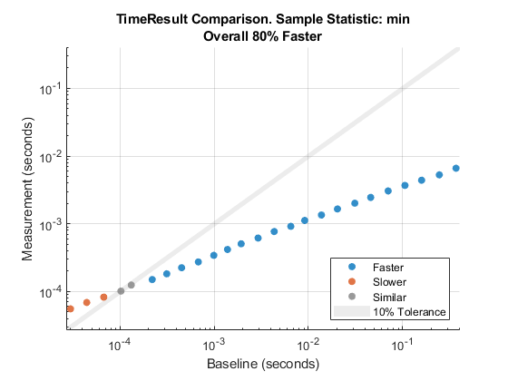
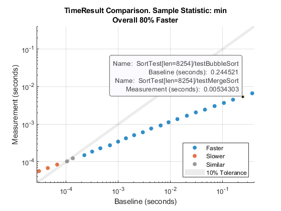
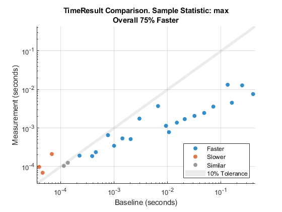
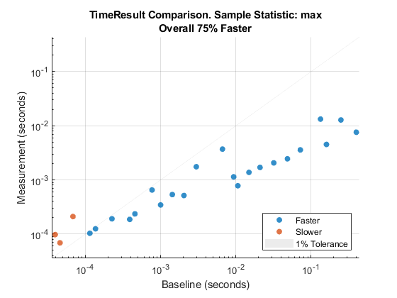

comparisonPlot
Class: matlab.perftest.TimeResult
Namespace: matlab.perftest
Create plot to compare baseline and measurement test results
Syntax
Description
cp = comparisonPlot(
creates a plot that visually compares each baseline,measurement)TimeResult object in the
baseline and measurement arrays using the
minimum of sample measurement times. The method returns the comparison plot as a matlab.unittest.measurement.chart.ComparisonPlot object.
cp = comparisonPlot(
creates a comparison plot using the specified statistic.baseline,measurement,stat)
cp = comparisonPlot(___,
specifies options using one or more name-value arguments in addition to any of the input
argument combinations in previous syntaxes. For example, Name,Value)cp =
comparisonPlot(baseline,measurement,"Scale","linear") creates a plot with a
linear scale for the x- and y-axes.
Input Arguments
Results from running a primary time experiment on a test suite, specified as a
matlab.perftest.TimeResult array. baseline must be
the same size as measurement.
Results from running a secondary time experiment on a test suite, specified as a
matlab.perftest.TimeResult array. measurement must
be the same size as baseline.
Statistic applied to the sample measurement times of each TimeResult
object in baseline and measurement, specified
as "min", "max", "mean", or
"median".
Data Types: string | char
Name-Value Arguments
Specify optional pairs of arguments as
Name1=Value1,...,NameN=ValueN, where Name is
the argument name and Value is the corresponding value.
Name-value arguments must appear after other arguments, but the order of the
pairs does not matter.
Example: cp =
comparisonPlot(baseline,measurement,SimilarityTolerance=0.05,Scale="linear")
Before R2021a, use commas to separate each name and value, and enclose
Name in quotes.
Example: cp =
comparisonPlot(baseline,measurement,"SimilarityTolerance",0.05,"Scale","linear")
Scale of the x- and y-axes of the comparison
plot, specified as "log" or "linear".
Data Types: string | char
Allowable deviation of the statistics ratio from 1, for a pair of similar
performance tests, specified as a numeric value between 0 and
1.
SimilarityTolerance specifies the borders of a shaded region
in the comparison plot. Data points that fall inside this region represent similar
baseline and measurement entries.
Parent container in which to plot, specified as a Figure,
Panel, Tab, or TiledChartLayout
object.
Examples
Visualize the computational complexity of two sorting algorithms, bubble sort and merge sort, which sort list elements in ascending order. Bubble sort is a simple sorting algorithm that repeatedly steps through a list, compares adjacent pairs of elements, and swaps elements if they are in the wrong order. Merge sort is a "divide and conquer" algorithm that takes advantage of the ease of merging sorted sublists into a new sorted list.
In a file named bubbleSort.m in your current folder, create the
bubbleSort function, which implements the bubble sort
algorithm.
function y = bubbleSort(x) % Sorting algorithm with O(n^2) complexity n = length(x); swapped = true; while swapped swapped = false; for i = 2:n if x(i-1) > x(i) temp = x(i-1); x(i-1) = x(i); x(i) = temp; swapped = true; end end end y = x; end
In a file named mergeSort.m in your current folder, create the
mergeSort function, which implements the merge sort
algorithm.
function y = mergeSort(x) % Sorting algorithm with O(n*logn) complexity y = x; % A list of one element is considered sorted if length(x) > 1 mid = floor(length(x)/2); L = x(1:mid); R = x((mid+1):end); % Sort left and right sublists recursively L = mergeSort(L); R = mergeSort(R); % Merge the sorted left (L) and right (R) sublists i = 1; j = 1; k = 1; while i <= length(L) && j <= length(R) if L(i) < R(j) y(k) = L(i); i = i + 1; else y(k) = R(j); j = j + 1; end k = k + 1; end % At this point, either L or R is empty while i <= length(L) y(k) = L(i); i = i + 1; k = k + 1; end while j <= length(R) y(k) = R(j); j = j + 1; k = k + 1; end end end
In a file named SortTest.m in your current folder, create the
SortTest parameterized test class, which compares the performance
of the bubble sort and merge sort algorithms. The len property
of the class contains the numbers of list elements you want to test with.
classdef SortTest < matlab.perftest.TestCase properties Data SortedData end properties (ClassSetupParameter) % Create 25 logarithmically spaced values between 10^2 and 10^4 len = num2cell(round(logspace(2,4,25))); end methods (TestClassSetup) function ClassSetup(testCase,len) orig = rng; testCase.addTeardown(@rng,orig) rng("default") testCase.Data = rand(1,len); testCase.SortedData = sort(testCase.Data); end end methods (Test) function testBubbleSort(testCase) while testCase.keepMeasuring y = bubbleSort(testCase.Data); end testCase.verifyEqual(y,testCase.SortedData) end function testMergeSort(testCase) while testCase.keepMeasuring y = mergeSort(testCase.Data); end testCase.verifyEqual(y,testCase.SortedData) end end end
Run performance tests for all the tests that correspond to the
testBubbleSort method and save the results in the
baseline array. Your results might vary from the results
shown.
baseline = runperf("SortTest","ProcedureName","testBubbleSort");
Running SortTest .......... .......... .......... .......... .......... .......... .......... .......... .......... .......... .......... .......... .......... .......... .......... .......... .......... .......... .......... .......... .......... .......... .......... .......... .......... .......... .......... .......... .......... .. Done SortTest __________
Run performance tests for all the tests that correspond to the
testMergeSort method and save the results in the
measurement array.
measurement = runperf("SortTest","ProcedureName","testMergeSort");
Running SortTest .......... .......... .......... .......... .......... .......... .......... .......... .......... .......... .......... .......... .......... .......... .......... .......... .......... .......... .......... .......... .......... .......... .......... .......... .......... .......... .......... .......... .......... .......... .......... .......... .......... .......... .......... .......... .......... .......... .......... .......... .......... .......... .......... .......... .......... .......... .......... .......... .......... .......... .......... .......... .......... .......... .......... .......... .......... .......... .......... .......... .......... .......... .......... .......... .......... .......... .......... .......... .......... .......... .......... .......... .......... .......... .......... .......... .......... .......... .......... .......... .......... ..... Done SortTest __________
Visually compare the minimum of the MeasuredTime column in the
Samples table for each corresponding pair of
baseline and measurement objects. In this
comparison plot, most data points are blue because they are below the shaded
similarity region. This result indicates the superior performance of merge sort for
the majority of tests. However, for small enough lists, bubble sort performs better
than or comparable to merge sort, as shown by the orange and gray points in the
plot. As a comparison summary, the plot reports that merge sort is 80% faster than
bubble sort. This value is the geometric mean of the improvement percentages
corresponding to all data points.
cp = comparisonPlot(baseline,measurement);

You can click or point to any data point to view detailed information about the time measurement results being compared.

To study the worst-case sorting algorithm performance for different list lengths, create a comparison plot based on the maximum of sample measurement times.
cp = comparisonPlot(baseline,measurement,"max");
Reduce similarity tolerance to 0.01 when comparing the maximum
of sample measurement times.
cp = comparisonPlot(baseline,measurement,"max","SimilarityTolerance",0.01);

Version History
Introduced in R2019b